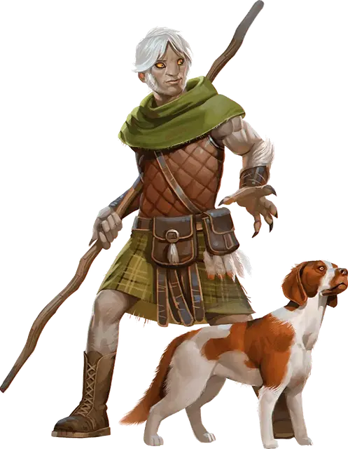

Шифтер
Shifter

Шифтеров иногда называют ликантропами, поскольку они являются потомками людей, которые были заражены полной или частичной ликантропией. Гуманоиды со звериным обликом, шифтеры не могут полностью изменять форму, но они могут временно усилить свои животные черты, войдя в состояние, которое они называют Смена формы.
Шифтеры похожи на людей по росту и телосложению, но, как правило, более стройные и гибкие. Их черты лица имеют звериные нотки, часто с большими глазами и заостренными ушами; у большинства шифтеров также есть выступающие клыки. У них растут похожие на мех волосы почти на каждой части тела.Пусть внешний вид шифтера и может выдать в них животного, они все равно остаются шифтерами даже в своем самом диком облике.
Большинство шифтеров напоминают определенный вид ликантропов. Вы можете выбрать вид ликантропа из вашего прошлого или вы можете определить его случайным образом, совершив бросок по таблице «Ликантроп предок». В таблице также содержится предложение относительно варианта Смены формы, который может быть у вас в результате вашей родословной.
Ликантроп предок
| к6 | Предок | Предлагаемый вариант Смены формы |
| 1 | Вермедведь | Зверошкур |
| 2 | Вервепрь | Зверошкур |
| 3 | Веркрыса | Быстроног |
| 4 | Вертигр | Быстроног |
| 5 | Вервольф (волкоподобный) | Длиннозуб |
| 6 | Вервольф (собакоподобный) | Дикий охотник |
Особенности шифтера
Вы обладаете следующими особенностями.
Увеличение характеристик. Либо значение одной характеристики по вашему выбору увеличивается на 2, а другой — на 1, либо значение трёх различных характеристик по вашему выбору увеличивается на 1.
Вид существа. Вы — Гуманоид.
Размер. Ваш размер — Средний.
Скорость. Ваша базовая скорость ходьбы — 30 футов.
Звериные инстинкты. Управляя зверем внутри, вы получаете владение одним из следующих навыков по вашему выбору: Акробатика, Атлетика, Запугивание или Выживание.
Тёмное зрение. На расстоянии 60 футов вы при тусклом освещении можете видеть так, как будто это яркое освещение, и в темноте так, как будто это тусклое освещение. В темноте вы не можете различать цвета, только оттенки серого.
Смена формы. Бонусным действием вы можете принять около звериный вид. Эта трансформация длится 1 минуту, до тех пор, пока вы не умрёте, или пока вы не решите вернуться в изначальное состояние бонусным действием. Когда вы трансформируетесь, вы получаете временные хиты, равные 2 х ваш бонус мастерства. Вы можете изменять свою форму количество раз, равное вашему бонусу мастерства. Вы восстанавливаете все потраченные использования по окончании продолжительного отдыха.
Всякий раз, когда вы изменяете форму, вы получаете дополнительные преимущества, основанное на одном из следующих вариантов (выберите одно, при выборе этой расы):
- Зверошкур. Вы дополнительно получаете 1к6 временных хитов. Пока вы находитесь в изменённой форме, вы также получаете +1 к КД.
- Длиннозуб. Когда вы изменяете форму и во время других ваших ходов, пока вы в изменённой форме, бонусным действием вы можете использовать свои длинные клыки для совершения безоружного удара. Если вы попадаете атакой клыками, то вы наносите 1к6 + ваш модификатор Силы колющего урона, вместо дробящего урона, свойственного безоружным ударам.
- Быстроног. Пока вы находитесь в изменённой форме, ваша скорость ходьбы увеличивается на 10 футов. Кроме того, вы можете реакцией переместиться на расстояние до 10 футов, когда существо заканчивает свой ход в пределах 5 футов от вас. Это передвижение не провоцирует атак.
- Дикий охотник. Пока вы находитесь в изменённой форме, вы совершаете проверки Мудрости с преимуществом и ни одно существо в пределах 30 футов от вас не может с преимуществом совершать бросок атаки против вас, пока вы дееспособны.
Языки. Вы можете говорить, читать и писать на Общем и ещё одном языке по вашему выбору, который по вашему мнению подходит вашему персонажу.